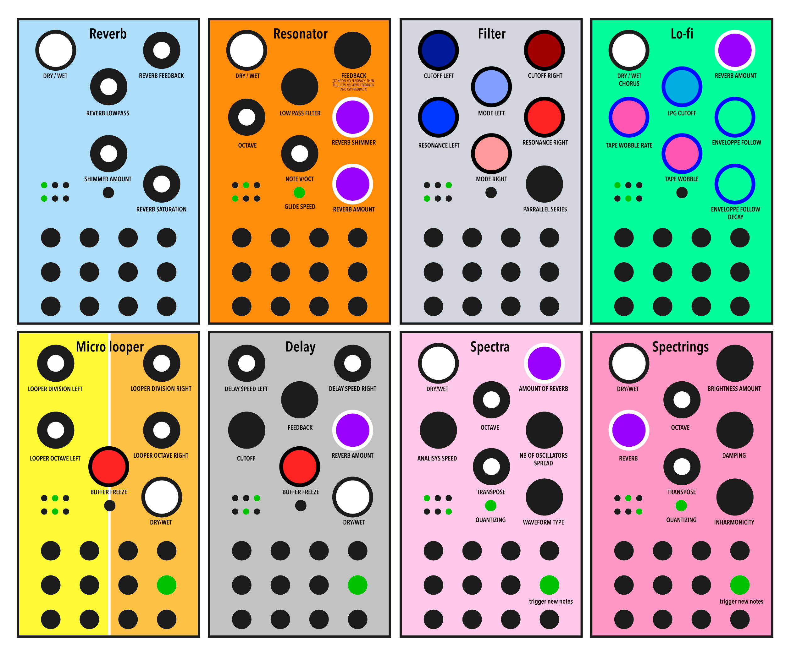

MultiVersio is a custom firmware for Noise Engineering's Versio Eurorack module platform that allows any Noise Engineering Versio model to assume various roles while playing live just by using the front panel switches.
Paolo Ingraito: invention and initial development
Additional Development Pete Baker Rory Prendergast
Discussion
More information and discussion at Modwiggler
Modes
Use the two positional switches on your Versio's front panel to change modes, as pictured below:

Diagram thanks to Tinmaar159 on Modwiggler
Reverb A reverb with infinite feedback and shimmer.
- An envelope follower tames the feedback by preventing clipping.
Resonator Tuned Karplus-Strong resonator with reverb, inspired by Mimeophon's KS mode.
- Audio input is fed into resonator and then controllable one pole low pass filter.
- Note input tracks 1V/Oct, and the feedback is restrained with an envelope follower as in Reverb mode.
- Note glide is controllable with the panel's button.
- Reverb option, with feedback, shimmer, and envelope follower taming infinite feedback as in above mode.
Filter Dual multimode stereo filter based on the Mutable Instruments Blades. Provides low pass, band pass, high pass.
- Left and Right cutoff, mode, resonance independently controllable. Can behave as a stereo filter or two mono filters.
- Lower-right knob controls routing, smoothly changing clockwise from parallel to series
Lo-Fi Tape-like effect ranging from subtle, saturated tape wobble to brittle, fragile sound from almost any input source. Inspired by the Shallow Water pedal.
- Optional reverb and Chorus
- Low Pass Gate with knob-controllable cutoff frequency
- Knob-controllable envelope follower modulation of Low Pass Gate
- Tape delay effect with wobble rate and depth
- If LPG cutoff is fully CCW, subtle high Pass filter and saturation added
Micro Looper A clockable dual glitch looper with knob-controllable play speed and repetitions. Panel is divided into independently looped left and right halves. Like Qu-Bit Data Bender, this mode shines with modulation!
- Clock input is required, fourth input jack on row 2
- Buffer freeze via knob
Delay A clockable dual/stereo delay with independently controllable channels. Sound is similar to the Mimeophon. Unlike many delays, can tolerate clock changes without pitching the audio.
- Clock input at fourth input jack on row 2
- Feedback can be tamed with user-controllable filter cutoff
- Optional reverb
- Buffer freeze option via knob
Spectra Spectral resynthesis of input audio. When a trigger is received, up to six active oscillators tune to harmonics of input audio.
- Resynthesis of incoming audio is triggered at falling edge of trigger/gate input at fourth input jack on row 2
- Pitch controllable at second input jack on row 2
- Optional reverb
Sounds beautiful with a multiple or division of clock as trigger.
Try demonizing speech as the audio input by sending a fast trigger in with Analysis Speed knob turned clockwise
Spectrings Similar to Spectra, but uses two string voices from Mutable Instruments Rings/Plaits.
- Resynthesis of incoming audio is triggered at falling edge of trigger/gate input at fourth input jack on row 2.
- Optional reverb
Acknowledgements
Thanks to Emilie Gilliet (spectrings and many filters are derived from her wonderful work). Thanks to the Daisy developers at Electrosmith for their lovely platform. And thanks to Noise Engineering for their awesome products!
Install
- Download pre-built firmware from the releases page.
- Log into the Versio customer portal using your Noise Engineering customer account.
- Go to the Firmware page of the customer portal.
- Connect your Versio module to your computer, and press buttons on the back to prepare your Versio module to receive firmware by following Noise Engineering's instructions on the Firmware page.
- Choose 'Custom Firmware' from the drop-down, choose the .bin file and wait for completion.
- Power Cycle your Versio and enjoy
Build
To build this firmware on your own machine, ensure you have base developer tools prerequisites such as git and make installed.
Getting latest source
To get the latest firmware source code to your machine:
If you have already cloned the directory but want to update it to the latest source code in the repository:
Docs
doxygen is used for documentation. To build locally, run:
Edit the Doxyfile
Tool prerequisites
- Install Electrosmith's Daisy toolchain according to instructions.
Compiling
Build using Visual Studio / VSCode using .sln files or by running make on non-Windows platforms.
If compilation is successful, load build/MultiVersio.bin using the Versio web installer. Alternately, run make flash with your module connected and ready to receive firmware.
Debug
Debugging via breakpoints or even logging requires the ST Link V3 MiniE board, available at Electrosmith and elsewhere.
Contributing / Hacking
This easy to build, very readable project is a fun way to get started playing with custom firmware on the Versio platform.
Feel free to update and improve the code! Please share your contributions so we can improve on this little thing :)
Usage
Created by user Tinmaar159 on Modwiggler:
Author
- Paolo Ingraito - Initial implementation
- Pete Baker - Refactoring and maintenance